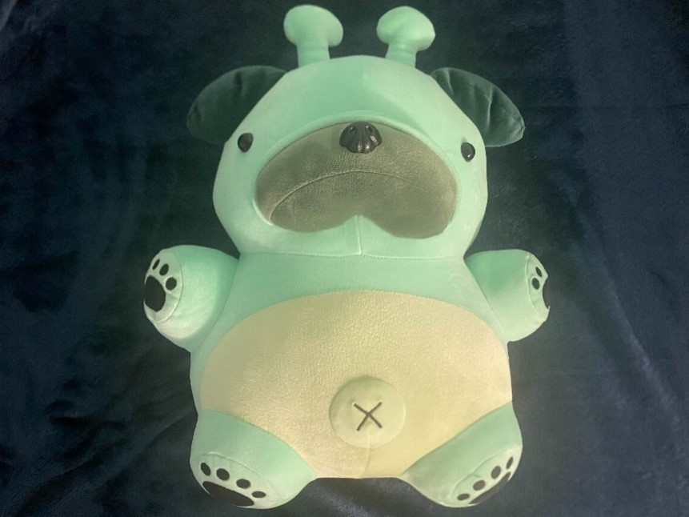
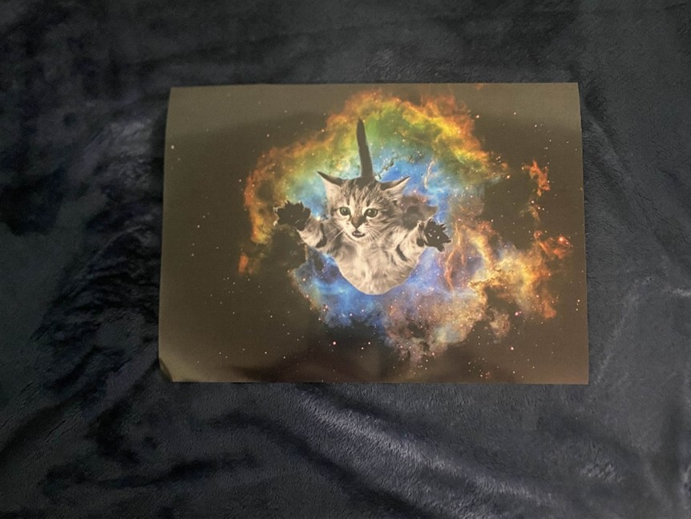
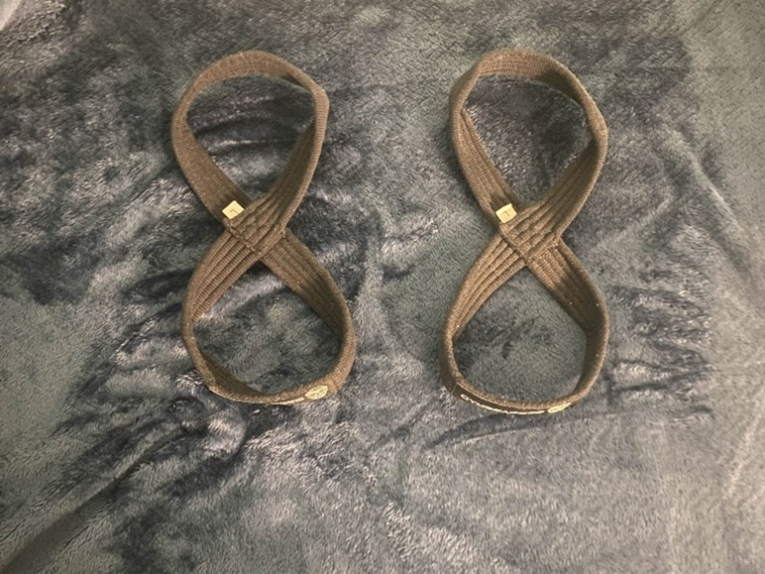
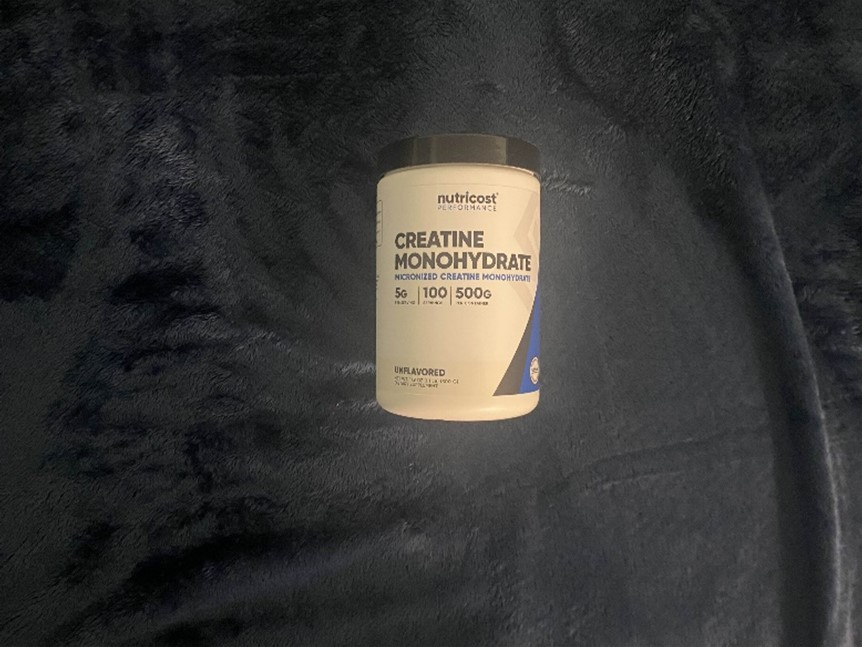
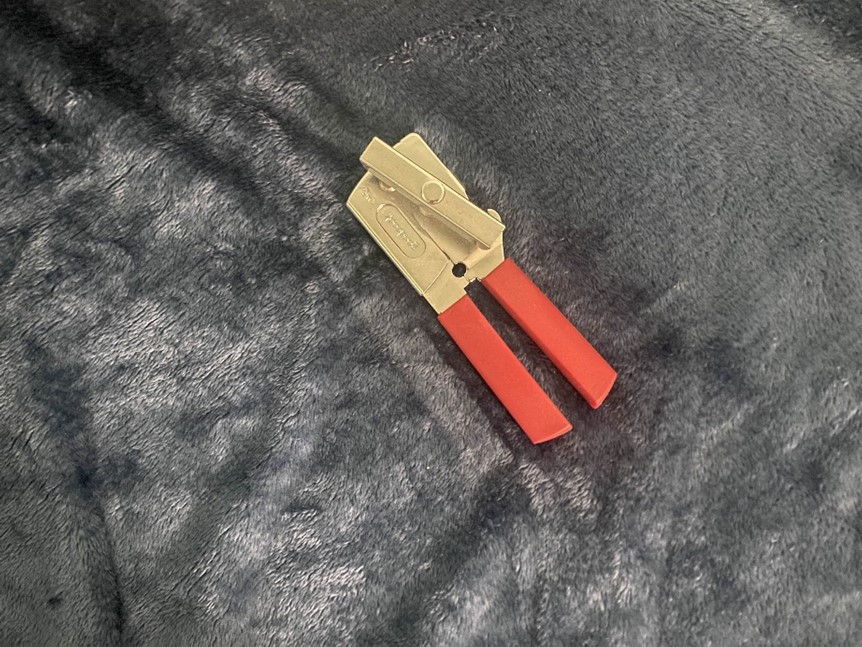
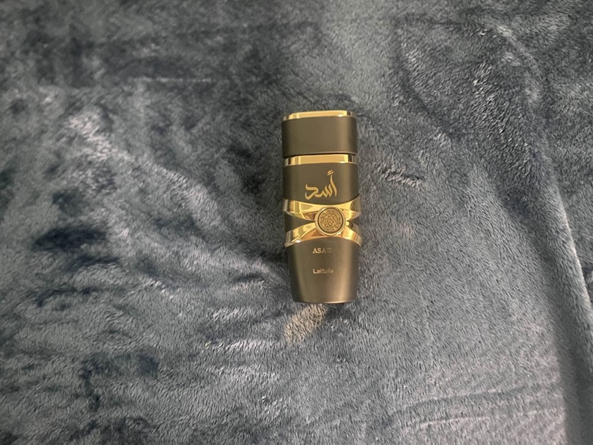
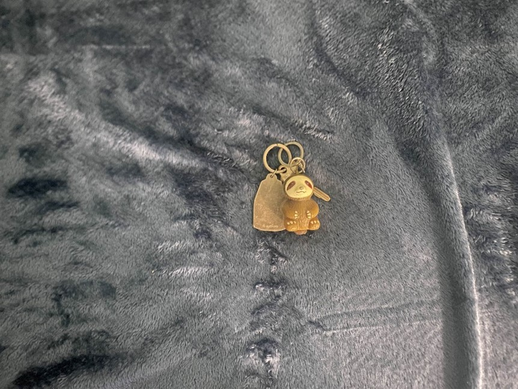
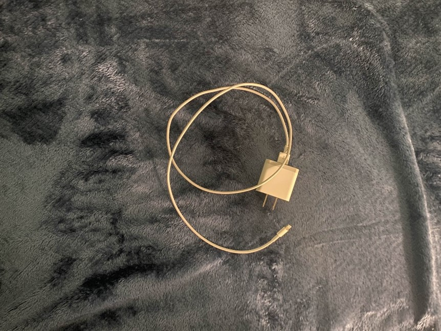

Week 28 - The stuffed retiring
Preface – Why I track
I started recording what I throw away each week because I realized I don’t notice the moment most objects “end.” To elaborate, the meaning behind items don’t disappear when they stop being useful, rather they get pushed back into spots that are forgotten, gaining dust on them. Sometimes an item is left sitting with no use and it’s done to the point where you even forget its place.
This project is documenting my own experience of discarding and how I want to see my things “end”. Rather than just discarding my items I use the weekly descriptions as records to keep information about the project, without needing picture perfect measurements or notes.
This project also made me think more about ideas from material culture, especially how everyday objects can carry personal meaning even after they stop being useful.
It’s more of a weekly inventory of small decisions: what I keep, what I replace, and what I hold onto for reasons that aren’t practical.
Creating this miniature blog is another reason why I enjoy sharing it. Knowing that someone might come across the way I discard my items and give them what I consider a proper end might encourage them to do the same for objects that don’t deserve to end up in some forgotten corner of a room.
Additional Sources
- Artists like Bordalo II show how discarded materials can still carry meaning by turning waste into large-scale animal sculptures that call attention to overconsumption and pollution.
- An archaeologist interviewed by the University of Chicago explains that what people throw away can reveal habits, values, and social organization, which connects to my idea that trash can say something about a person’s life and routines.
- The New York Times discussion of Vik Muniz’s garbage art also supports this idea by showing how discarded materials from a landfill can be transformed into meaningful artwork while drawing attention to the people involved in recycling work.
Overview – Patterns I noticed
This week of discarding felt like a continuation of the same problem I wrote about in the Preface: objects don’t really “end” when they stop being useful. They end when I finally notice them again.
Most of what I got rid of this week wasn’t sudden trash, it was stuff that had been pushed back, left sitting, and slowly turned into background clutter. When I looked at everything together, it didn’t feel random. It felt like proof that I keep items longer than I realize, mostly because it’s easy to forget them.
What stood out to me is that disposal is rarely one clean decision. It’s usually a slow process: I stop using something, I leave it somewhere “for now,” and then it sits there until I either replace it or get tired of seeing it.
A large number of objects we “throw out” fall under this umbrella where items exist in a gap where they have meaning, then lose it and then are thrown out. This week had a lot of items stuck in that gap.
The cute and cuddly
One group of items this week were objects I kept mostly for comfort, decoration, or the vibe they gave off. The dinosaur plushie is a good example: it’s easy to keep because it’s cute, but it’s worn and torn now and doesn’t feel worth holding onto. The alien dog plush fits into the same category, except it’s also too large, so it takes up space without actually being used. The glossy universe-cat print belongs here too. It’s still funny, but it doesn’t match what I want my space to look like anymore, which makes it feel like it’s from an older version of my room. I think keeping cute stuffed animals like this is fine, but it makes more sense under the following scenarios.
- Meaningful gift from someone you care about
- You really find the stuffed animal cute
- Giving enough meaning to the object to continue taking care of it and treating it with care
- For example: the alien dog is cute, but large and a bit old now so it makes more sense to give it away in my opinion
The ones who stopped working
Another group this week was made up of things that stopped doing their job. The gym wrist wraps stretched out, and once they stopped providing real support, they weren’t useful anymore. The broken charger fits here too: it’s the kind of thing you only notice when it fails. When something like that stops working, keeping it around doesn’t give it a second life.
The hollow containers
The last group was made up of items that were finished, replaced, or kept out of habit. The creatine tub is simple: it ran out, so the container didn’t have a purpose anymore. The can opener was replaced with a better one, which made the old one unnecessary. The empty cologne bottle fits the same pattern: it’s finished and keeping it doesn’t change that. The sloth keychain is the most personal example in this group. It used to mean something, but I haven’t used it in a long time and leaving it in a drawer felt like the same “pushed back and forgotten” ending that this project is trying to prevent.
Gallery – The nine items of the week
Dinosaur Plushie Squished

Worn and torn now; no longer comforting to keep around.
Alien Dog Plush
Too large for my space; it became storage more than something I enjoyed.
Universe Cat Print (Glossy)
Aesthetic phase; doesn’t match what I want displayed anymore.
Gymreaper Wrist Wraps
Stretched out; no longer supportive.
Empty Creatine Tub
Finished; keeping the container was just taking up space.
Can Opener
Replaced with a better one; redundant.
Empty Cologne
Finished; I’d rather keep space for items I use.
Sloth Keychain
Used to mean something, but I haven’t used it in a long time.
Broken Charger
Stopped working; no reason to keep it.
Click here to learn more about gallery items
These are resources I've used to index more information about items (some dont have wiki pages so I used relatively similar topics instead.)
- Dinosaur plushie (stuffed toy)
- Alien dog plush (stuffed toy)
- Universe cat print (printmaking)
- Gym wrist wraps
- Empty creatine tub (creatine)
- Can opener
- Empty cologne bottle (cologne)
- Sloth keychain
- Broken charger
Table of Item Data
| Item | Weight | Cost | How acquired | Location kept | Time owned | Mode of disposal | Material |
|---|---|---|---|---|---|---|---|
| Dinosaur Plushie Squished | ~300 g | ~$15 | Gift | bed / shelf | 4+ years | polyester fabric + stuffing | |
| Alien Dog Plush | ~650 g | ~$25 | Self-purchased | closet shelf / corner of room | 3 months | polyester fabric + stuffing | |
| Universe Cat Print (Glossy) | ~10 g | ~$4 | Custom makerspace print request | desk / pinned area | 1 week | glossy paper | |
| Gymreaper Wrist Wraps | ~250 g | ~$20 | Gifted | gym bag / cabinet | 3 years | elastic fabric + velcro | |
| Empty Creatine Tub | ~80 g | ~$25 (when full) | Amazon | kitchen cabinet / pantry shelf | 2 months | plastic (HDPE/PP) | |
| Can Opener | ~200 g | ~$10 | Amazon | kitchen drawer | 6 months | stainless steel + plastic grip | |
| Empty Cologne | ~250 g | ~$50 | Prize | counter / dresser | 1 year | glass bottle + plastic sprayer | |
| Sloth Keychain | ~30 g | ~$8 | Gift | key bowl / drawer | 5 years | metal + enamel/plastic | |
| Broken Charger | ~40 g | ~$15 | Apple Store | desk / cable pile | 3 years | copper wire + rubber/plastic |
Disposal legend: Donation / Re-gift | Recycle | Trash | Gift / Re-gift | E-waste recycling
Coda - Final thoughts
This week felt like clearing out the quiet leftover things I didn’t dislike enough to throw away immediately but also didn’t actively choose to keep. Putting them into a single gallery makes it obvious how often “future use” is just a way of postponing a decision.
Next week, I want to pay attention to what gets discarded without any hesitation versus what I keep negotiating with myself about. If you’ve been documenting your own weekly clutter or have thoughts about what counts as “waste,” feel free to share them.
More on the idea of “waste” as a concept: Wikipedia: Waste
(P.s) if you want to read more about one of the items from this week Continue reading on the item profile page.